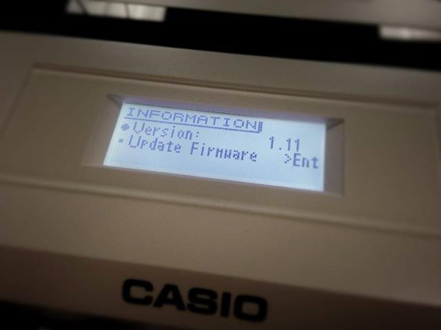

В CASIO CTK-7000 используется следующий DSP-процессор:
Tri-element AHL
Видимо, подразумевается трехядерный или трехканальный AHL процессор (а по правильному - DSP-процессор, т. е. Digital Signal Processor).
Аббревиатура AHL расшифровывается как "Acoustic & Highly compressed wave form" иногда добавляют "keyboard sound chip". По всей видимости, речь идет о способе или о формате хранения звука в синтезаторе. AHL-процессор, по всей видимости, на аппаратном уровне способен воспроизводить формат AHL напрямую, поэтому и называется "Звуковой процессор AHL".
Наличие флеш-диска с файловой системой FAT16 (или FAT32?) позволяет предположить, что в качестве операционной системы используется Linux. Возможно, в качестве основного процессора используется ARM или какой-либо MIPS. Однако, библиотеки для работы с FAT существуют и под Arduino (примитивный 8-ми битовый процессор AVR с простой управляющей программой без всякой ОС), поэтому однозначно утверждать наличие Линукса нельзя.
Для синтезатора существует ПО, которое конвентирует WAV-файл в проприетарный формат CASIO и обратно, и заливает файлы на флеш-диск. Оно назвается Casio Data Manager 6.0. Это ПО подходит для следующих синтезаторов:
Таким образом можно предположить, что эти модели имеют одинаковый звуковой DSP-процессор и прочую начинку и хорошо совместимы.
Процедура преобразования WAV-файла в формат CASIO для файлов в 9-15Mb происходит практически мгновенно даже на слабых компьютерах, благодаря чему можно предположить, что меняется только заголовок. Таким образом, формат "Acoustic & Highly compressed wave form" (AHL) - это просто представление звука в виде обычного WAV-файла с измененным заголовком. Причем заголовок меняется не сильно, и остается обычным WAV-заголовком. Однако, нужно не исключать возможность, что формат AHL - это формат хранения оцифровок инструментов, и к WAv файлам отношения не имеет.
Или, преобразования никакого не происходит, а просто, при добавлении WAV-файла на флешку, изменяется индексный файл CASIOWAV.DIR (см. ниже).
WAV-файл, который может преобразовать Casio Data Manager 6.0 должен иметь следующий формат (взято из официальной документации):
На флеш-карте, отформатированной в CASIO, находится единственная директория MUSICDAT, в которой содержатся следующие файлы:
$ ls -l
-r--r--r-- 1 xi xi 224 сен 20 2012 CASIOWAV.DIR
-r--r--r-- 1 xi xi 133038080 июл 7 2007 CASIOWV1.WAV
-r--r--r-- 1 xi xi 133038080 июл 7 2007 CASIOWV2.WAV
-r--r--r-- 1 xi xi 133038080 июл 7 2007 CASIOWV3.WAV
-r--r--r-- 1 xi xi 133038080 июл 7 2007 CASIOWV4.WAV
-r--r--r-- 1 xi xi 133038080 июл 7 2007 CASIOWV5.WAV
-rw-r--r-- 1 xi xi 49877036 сен 20 2012 _D4C50B0.WV7
-rw-r--r-- 1 xi xi 5298 июл 7 2007 DOGGIE__.CMS
-rw-r--r-- 1 xi xi 8795 июл 7 2007 DOGGIE__.MID
-rw-r--r-- 1 xi xi 3248 июл 7 2007 TURMAR01.CMS
-rw-r--r-- 1 xi xi 6325 июл 7 2007 TURMAR01.MID
Файлы CASIOWV1.WAV - CASIOWV5.WAV - это те файлы, которые видны в интерфейсе самого синтезатора в режимах AUDIO PLAY и AUDIO RECORD. Имеют фиксированный размер 128Мб. Предназначены для аудиозаписи средствами синтезатора. По-умолчанию заполнены нулями. Возможно, при проигрывании и при записи они целиком помещаются в память. Таким образом, как минимум, в CASIO CTK-7000, ОЗУ имеет размер больше 128Мб.
На файлах CASIOWV1-5.WAV программа mplayer показывает такой заголовок:
==========================================================================
Opening audio decoder: [pcm] Uncompressed PCM audio decoder
AUDIO: 42819 Hz, 2 ch, s16le, 1370.2 kbit/100.00% (ratio: 171276->171276)
Selected audio codec: [pcm] afm: pcm (Uncompressed PCM)
==========================================================================
AO: [pulse] Init failed: Connection refused
Failed to initialize audio driver 'pulse'
AO: [alsa] 48000Hz 2ch s16le (2 bytes per sample)
То есть, кодирование идет по 2 байта (16 бит) на каждый канал в последовательности LE. Одна выборка занимает 4 байта. Судя HEX-дампу, запись с микрофона идет в моно-режиме, на каждый канал просто записывается одинаковое значение. Пример:
27 00 27 00 │ 2E 00 2E 00 │ 31 00 31 00 │ 38 00 38 00 │ 4B 00 4B 00 │ 52 00 52 00
4E 00 4E 00 │ 4E 00 4E 00 │ 4B 00 4B 00 │ 4B 00 4B 00 │ 4E 00 4E 00 │ 4E 00 4E 00
Файл _D4C50B0.WV7 является WAV-файлом, залитым через программу Casio Data Manager 6.0. У него такой заголовок:
==========================================================================
Opening audio decoder: [pcm] Uncompressed PCM audio decoder
AUDIO: 44100 Hz, 2 ch, s16le, 1411.2 kbit/100.00% (ratio: 176400->176400)
Selected audio codec: [pcm] afm: pcm (Uncompressed PCM)
==========================================================================
AO: [pulse] Init failed: Connection refused
Failed to initialize audio driver 'pulse'
AO: [alsa] 48000Hz 2ch s16le (2 bytes per sample)
При копировании файлов на флеш-диск через Casio Data Manager 6.0, изменяется файл CASIOWAV.DIR, в котором находятся какие-то индексные данные о файлах на флешке. Это таблица с записями размером 32 байта. В таблице перечисляются только звуковые (аудио) файлы, прочие файлы с расширением .MID и .CMS в ней не прописываются.
0000:0000 | 43 41 53 49 4F 57 56 31 57 41 56 00 D4 3F 11 01 | CASIOWV1WAV.Ô?..
0000:0010 | 68 00 00 00 43 41 53 49 4F 57 56 20 31 20 20 20 | h...CASIOWV 1
0000:0020 | 43 41 53 49 4F 57 56 32 57 41 56 00 D4 3F 0B 01 | CASIOWV2WAV.Ô?..
0000:0030 | 66 00 00 00 43 41 53 49 4F 57 56 20 32 20 20 20 | f...CASIOWV 2
0000:0040 | 43 41 53 49 4F 57 56 33 57 41 56 00 D4 3F DB 00 | CASIOWV3WAV.Ô?Û.
0000:0050 | 53 00 00 00 43 41 53 49 4F 57 56 20 33 20 20 20 | S...CASIOWV 3
0000:0060 | 43 41 53 49 4F 57 56 34 57 41 56 00 00 00 00 00 | CASIOWV4WAV.....
0000:0070 | 00 00 00 00 43 41 53 49 4F 57 56 20 34 20 20 20 | ....CASIOWV 4
0000:0080 | 43 41 53 49 4F 57 56 35 57 41 56 00 00 00 00 00 | CASIOWV5WAV.....
0000:0090 | 00 00 00 00 43 41 53 49 4F 57 56 20 35 20 20 20 | ....CASIOWV 5
0000:00A0 | 5F 44 34 43 35 30 42 30 57 56 37 02 00 10 F9 02 | _D4C50B0WV7...ù.
0000:00B0 | 1A 01 00 00 7A 65 6D 6C 79 61 6E 65 5F 2D 5F 74 | ....zemlyane_-_t
0000:00C0 | FF FF FF FF FF FF FF FF FF FF FF FF 00 00 00 00 | ÿÿÿÿÿÿÿÿÿÿÿÿ....
0000:00D0 | 00 00 00 00 FF FF FF FF FF FF FF FF FF FF FF FF | ....ÿÿÿÿÿÿÿÿÿÿÿÿ
Формат одной записи примерно следующий:
Для CASIOWV1.WAV - D4 3F 11 01 68 00 00 00
Для CASIOWV2.WAV - D4 3F 0B 01 66 00 00 00
Для CASIOWV3.WAV - D4 3F DB 00 53 00 00 00
Для CASIOWV4.WAV - 00 00 00 00 00 00 00 00 // В этот файл еще ни разу не была сделана запись
Для CASIOWV5.WAV - 00 00 00 00 00 00 00 00 // В этот файл еще ни разу не была сделана запись
Для _D4C50B0.WV7 - 00 10 F9 02 1A 01 00 00
Была произведена попытка создания файла CASIOWAV.DIR с восемью файлами CASIOWV1-8.WAV, чтобы проверить возможность увеличения количества записываемых оцифровок, так как 5 - это слишком мало и неудобно. В данный файл были добавлены 3 записи для файлов CASIOWV6-8.WAV. На флешке из пятого файла (CASIOWV5.WAV) было создано три файла (CASIOWV6.WAV, CASIOWV7.WAV, CASIOWV8.WAV) путем копирования. При открытии флешки на самой CASIO CTK-7000 эти файлы были нормально видны. Однако запись в них невозможна, так как при записи нет возможности выбрать файл с номером больше 5. Таким образом, ограничение на 5 файлов сделано где-то в прошивке и не зависит от файловой структуры на флешке.
Вопрос о вытягивании и модификации прошивки остается открытым.
Прошивка
Прошивку, по всей видимости, обновлять можно. Однако нигде в интернете нет информации по синтезаторам CASIO CTK-7000/6000 о процедуре обновления прошивки.
Была найдена новость, что есть возможность обновить прошивку для CASIO PX-5S. Это совсем не то, что интересующая нас серия самоиграек, но все же хоть какая-то информация. Вот фотография:

Ссылка на страницу прошивки:
http://support.casio.com/en/support/download.php?cid=008&pid=435
Содержимое страницы:
[Firmware Update] PX-5S - Version 1.11
Sep 2013
Supported Models PX-5S
Improvements Provided by This Update
Version 1.10 >> Version 1.11
• Improving certain operation.
Version 1.00 >> Version 1.10
• Improving the Key Follow function of Hex Layer.
• Adding a portamento function to the Melody tones and the Hex Layer tones.
• Adding a volume control to the Audio Recorder.
• Adding a volume control to the Damper Noise.
• Adding ‘Toggle Mode’ to the Pedal Function.
• Adding MIDI Rx message filters.
• Expanding the frequency range of the Master Equalizer.
• Expanding the frequency range of the DSP Equalizer.
• Adding a Fine tune to the DSP Pitch Shifter.
• Adding a Bypass to the System Effects and the Master Effects.
• Adding a destination parameters to the controllers (Knobs, Sliders, Modulation and Pedals).
• Adding a calibration function of the position of the Knobs.
• Adding a sample waves to the Hex Layer.
For More Information, please download Ver1.10 Firmware Manual.
Applicable Users
PX-5S owners whose instrument is still running Version under 1.11 firmware.
Note that when the firmware of the instrument is updated, the firmware is unreturnable to original version.
To check your firmware version
On your PX-5S instrument, press the [POWER] button to turn on the instrument.
Press the "SYS SETTING" button to display the setting screen.
Select "Information" and press [ENTER] to display the version confirmation screen.
If the firmware version is under 1.11, You need to download this update software and install it on the instrument.
Пример действий по прошивке синтезатора XW-G1:
[Firmware Update] XW-G1 - Version 1.10
Supported Models XW-G1
Improvements Provided by This Update
Version 1.02 >> Version 1.10
• Adds a function which can select a step sequencer pattern as a target for Multi-Function Key.
Press "PERFORM" button then press the "EDIT" button to display the Performance editing screen.
Perform the following operation. "Mltfunc Key" -> "Key Setting"
When you select "Step Seq", you can edit the following parameter in addition.
Display Description Settings
Pattern Specifies a step sequencer pattern number changed by pressing Multi-Function Key.
In the case of "stay", the pattern number remains the same. Stay, 1-8
• Adds an wave level indicator to User Wave Tone editing list.
When you select a User Wave Tone (U:200-209), press the "TONE" button then press the "EDIT" button to display the Tone Editing Screen.
Perform the following operation. "Split Edit" -> "Points"
When you choose any points (Start/Loop/End), press the "MENU" button, you can confirm a wave level.
If you want to quit to watch wave level, press the "EXIT" button.
• Improved certain operation.
Applicable Users
XW-G1 owners whose instrument is still running Version 1.02 firmware.
Note that when the firmware of the instrument is updated, the firmware is unreturnable to original version.
To check your firmware version
On your XW-G1 instrument, press the [POWER] button to turn on the instrument.
Press the "SETTING" button to display the setting screen.
If you can not find "INFO" under "MIDI" in the list, the firmware version of the instrument is less than 1.10. You need to download this update software and install it on the instrument.
If you can find "INFO" and press [ENTER] to display the version confirmation screen, the firmware version of the instrument is the number which is displayed.
Установка прошивки на таких синтезаторах происходит так:
To install the update software on your instrument
• Note that installation of the update software cannot be undone. Once you install the update software, there is no way to restore you instrument to its original firmware version.
• Installation of this update software will not delete the data you made. But just to be safe, you should copy the data on the SD card.
1. Extract the folder you downloaded.
Windows Users:
Check to make sure "XW-P1-Updater.exe" are present in the folder.
Macintosh Users:
Check to make sure "XW-P1 Updater.app" are present.
2. Remove the USB cable from the instrument, and turn off your instrument.
3. Press the "POWER" button pressing with both the "EDIT" and the "WRITE" button to enter the updating mode.
4. Both "UPDATE MODE" and all level indicator are displayed. (fig.1) Insert USB cable to the instrument and your computer.
Connect the instrument to its USB cable and establish a USB connection with your computer.You can find "CASIO XW-P1" is displayed on your computer.
5. Double-click the update program you downloaded.
Update program will be started automatically. (Approximately 6 minutes after update program will be finished.)
Don't turn off the instrument or remove the USB cable from the instrument, when the firmware is under updating.
Windows Users:
The Application accesses the mounted drives. And when the application starts, Command Prompt will be appeared.
Macintosh Users:
During this update process, the following error message has no problem, "The disk was not ejected properly."
If you find this message, please select "OK" button, the update will proceed.
6. When the firmware is finished to update, update program will quit automatically.
And the instrument will restart automatically.
7. Confirm the version on your instrument.
Press the "SETTING" button on your instrument to enter setting mode.
When you select "INFO", Press the "ENTER" button and check "Version: 1.10" is displayed.
Delete the update program when you have finished to confirm.